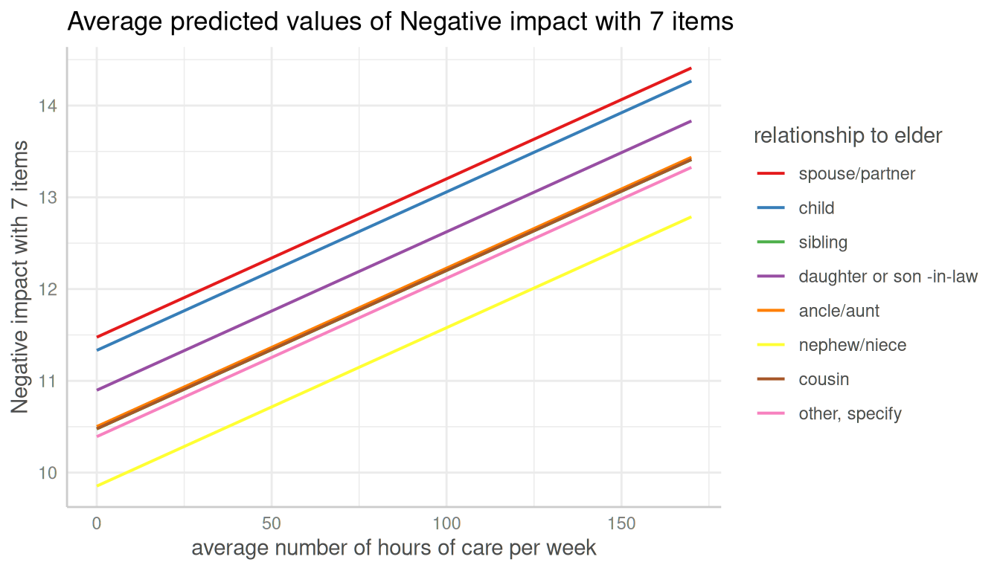

Introduction: Adjusted Predictions and Marginal Effects for Random Effects Models
Daniel Lüdecke
2022-02-07
Source:vignettes/introduction_randomeffects.Rmd
introduction_randomeffects.Rmd## Warning in checkDepPackageVersion(dep_pkg = "TMB"): Package version inconsistency detected.
## glmmTMB was built with TMB version 1.7.21
## Current TMB version is 1.7.22
## Please re-install glmmTMB from source or restore original 'TMB' package (see '?reinstalling' for more information)This vignette shows how to calculate marginal effects that take the random-effect variances for mixed models into account.
Marginal effects for mixed effects models
Basically, the type of predictions, i.e. whether to account for the uncertainty of random effects or not, can be set with the type-argument. The default, type = "fixed", means that predictions are on the population-level and do not account for the random effect variances. Intervals are confidence intervals for the predicted values.
library(ggeffects)
library(lme4)
data(sleepstudy)
m <- lmer(Reaction ~ Days + (1 + Days | Subject), data = sleepstudy)
pr <- ggpredict(m, "Days")
pr
#> # Predicted values of Reaction
#>
#> Days | Predicted | 95% CI
#> -----------------------------------
#> 0 | 251.41 | [238.03, 264.78]
#> 1 | 261.87 | [248.57, 275.17]
#> 2 | 272.34 | [258.44, 286.24]
#> 3 | 282.81 | [267.70, 297.91]
#> 5 | 303.74 | [284.96, 322.52]
#> 6 | 314.21 | [293.17, 335.24]
#> 7 | 324.68 | [301.21, 348.14]
#> 9 | 345.61 | [316.94, 374.28]
#>
#> Adjusted for:
#> * Subject = 0 (population-level)
plot(pr)
When type = "random", the predicted values are still on the population-level. However, the random effect variances are taken into account, meaning that the intervals are actually prediction intervals and become larger. More technically speaking, type = "random" accounts for the uncertainty of the fixed effects conditional on the estimates of the random-effect variances and conditional modes (BLUPs).
The random-effect variance is the mean random-effect variance. Calculation is based on the proposal from Johnson et al. 2014, which is also implemented in functions like performance::r2() or insight::get_variance() to get r-squared values or random effect variances for mixed models with more complex random effects structures.
As can be seen, compared to the previous example with type = "fixed", predicted values are identical (both on the population-level). However, standard errors, and thus the resulting confidence (or prediction) intervals are much larger .
pr <- ggpredict(m, "Days", type = "random")
pr
#> # Predicted values of Reaction
#>
#> Days | Predicted | 95% CI
#> -----------------------------------
#> 0 | 251.41 | [199.49, 303.32]
#> 1 | 261.87 | [209.98, 313.77]
#> 2 | 272.34 | [220.29, 324.39]
#> 3 | 282.81 | [230.42, 335.19]
#> 5 | 303.74 | [250.18, 357.30]
#> 6 | 314.21 | [259.82, 368.60]
#> 7 | 324.68 | [269.30, 380.05]
#> 9 | 345.61 | [287.84, 403.39]
#>
#> Adjusted for:
#> * Subject = 0 (population-level)
plot(pr)
The reason why both type = "fixed" and type = "random" return predictions at population-level is because ggpredict() returns predicted values of the response at specific levels of given model predictors, which are defined in the data frame that is passed to the newdata-argument (of predict()). The data frame requires data from all model terms, including random effect terms. This again requires to choose certain levels or values also for each random effect term, or to set those terms to zero or NA (for population-level). Since there is no general rule, which level(s) of random effect terms to choose in order to represent the random effects structure in the data, using the population-level seems the most clear and consistent approach.
To get predicted values for a specific level of the random effect term, simply define this level in the condition-argument.
ggpredict(m, "Days", type = "random", condition = c(Subject = 330))
#> # Predicted values of Reaction
#>
#> Days | Predicted | 95% CI
#> -----------------------------------
#> 0 | 275.10 | [223.18, 327.01]
#> 1 | 280.75 | [228.86, 332.64]
#> 2 | 286.40 | [234.35, 338.45]
#> 3 | 292.05 | [239.67, 344.44]
#> 5 | 303.36 | [249.80, 356.92]
#> 6 | 309.01 | [254.62, 363.40]
#> 7 | 314.67 | [259.29, 370.04]
#> 9 | 325.97 | [268.20, 383.75]Finally, it is possible to obtain predicted values by simulating from the model, where predictions are based on simulate().
ggpredict(m, "Days", type = "sim")
#> # Predicted values of Reaction
#>
#> Days | Predicted | 95% CI
#> -----------------------------------
#> 0 | 251.32 | [201.25, 301.16]
#> 1 | 261.66 | [211.63, 311.55]
#> 2 | 272.32 | [222.32, 322.59]
#> 3 | 283.03 | [232.84, 333.20]
#> 5 | 303.65 | [253.76, 354.13]
#> 6 | 314.20 | [264.98, 363.54]
#> 7 | 324.55 | [274.57, 374.16]
#> 9 | 345.07 | [295.48, 394.70]
#>
#> Adjusted for:
#> * Subject = 0 (population-level)Marginal effects for zero-inflated mixed models
For zero-inflated mixed effects models, typically fitted with the glmmTMB or GLMMadaptive packages, predicted values can be conditioned on
- the fixed effects of the conditional model only (
type = "fixed") - the fixed effects and zero-inflation component (
type = "zero_inflated") - the fixed effects of the conditional model only (population-level), taking the random-effect variances into account (
type = "random") - the fixed effects and zero-inflation component (population-level), taking the random-effect variances into account (
type = "zi_random") - all model parameters (
type = "sim")
library(glmmTMB)
data(Salamanders)
m <- glmmTMB(
count ~ spp + mined + (1 | site),
ziformula = ~ spp + mined,
family = truncated_poisson,
data = Salamanders
)Similar to mixed models without zero-inflation component, type = "fixed" and type = "random" for glmmTMB-models (with zero-inflation) both return predictions on the population-level, where the latter option accounts for the uncertainty of the random effects. In short, predict(..., type = "link") is called (however, predicted values are back-transformed to the response scale).
ggpredict(m, "spp")
#> # Predicted counts of count
#>
#> spp | Predicted | 95% CI
#> --------------------------------
#> GP | 0.94 | [0.62, 1.40]
#> PR | 0.56 | [0.30, 1.02]
#> DM | 1.17 | [0.80, 1.70]
#> EC-A | 0.77 | [0.48, 1.23]
#> EC-L | 1.79 | [1.25, 2.55]
#> DES-L | 1.71 | [1.20, 2.44]
#> DF | 0.98 | [0.67, 1.44]
#>
#> Adjusted for:
#> * mined = yes
#> * site = NA (population-level)
ggpredict(m, "spp", type = "random")
#> # Predicted counts of count
#>
#> spp | Predicted | 95% CI
#> ---------------------------------
#> GP | 0.94 | [0.13, 6.92]
#> PR | 0.56 | [0.07, 4.32]
#> DM | 1.17 | [0.16, 8.61]
#> EC-A | 0.77 | [0.10, 5.77]
#> EC-L | 1.79 | [0.24, 13.09]
#> DES-L | 1.71 | [0.23, 12.56]
#> DF | 0.98 | [0.13, 7.22]
#>
#> Adjusted for:
#> * mined = yes
#> * site = NA (population-level)For type = "zero_inflated", the predicted response value is the expected value mu*(1-p) without conditioning on random effects. Since the zero inflation and the conditional model are working in “opposite directions”, a higher expected value for the zero inflation means a lower response, but a higher value for the conditional model means a higher response. While it is possible to calculate predicted values with predict(..., type = "response"), standard errors and confidence intervals can not be derived directly from the predict()-function. Thus, confidence intervals for type = "zero_inflated" are based on quantiles of simulated draws from a multivariate normal distribution (see also Brooks et al. 2017, pp.391-392 for details).
ggpredict(m, "spp", type = "zero_inflated")
#> # Predicted counts of count
#>
#> spp | Predicted | 95% CI
#> --------------------------------
#> GP | 0.14 | [0.05, 0.23]
#> PR | 0.02 | [0.00, 0.03]
#> DM | 0.25 | [0.10, 0.39]
#> EC-A | 0.04 | [0.01, 0.08]
#> EC-L | 0.37 | [0.15, 0.59]
#> DES-L | 0.43 | [0.19, 0.68]
#> DF | 0.21 | [0.08, 0.33]
#>
#> Adjusted for:
#> * mined = yes
#> * site = NA (population-level)For type = "zi_random", the predicted response value is the expected value mu*(1-p), accounting for the random-effect variances. Intervals are calculated in the same way as for type = "zero_inflated", except that the mean random effect variance is considered and thus prediction intervals rather than confidence intervals are returned.
ggpredict(m, "spp", type = "zi_random")
#> # Predicted counts of count
#>
#> spp | Predicted | 95% CI
#> --------------------------------
#> GP | 0.14 | [0.01, 1.64]
#> PR | 0.02 | [0.00, 0.25]
#> DM | 0.25 | [0.01, 2.77]
#> EC-A | 0.04 | [0.00, 0.54]
#> EC-L | 0.37 | [0.02, 4.06]
#> DES-L | 0.43 | [0.03, 4.73]
#> DF | 0.21 | [0.01, 2.32]
#>
#> Adjusted for:
#> * mined = yes
#> * site = NA (population-level)Finally, it is possible to obtain predicted values by simulating from the model, where predictions are based on simulate() (see Brooks et al. 2017, pp.392-393 for details). To achieve this, use type = "simulate".
ggpredict(m, "spp", type = "simulate")
#> # Predicted counts of count
#>
#> spp | Predicted | 95% CI
#> --------------------------------
#> GP | 1.09 | [0.00, 4.16]
#> PR | 0.29 | [0.00, 2.22]
#> DM | 1.52 | [0.00, 5.34]
#> EC-A | 0.53 | [0.00, 3.09]
#> EC-L | 2.19 | [0.00, 7.08]
#> DES-L | 2.28 | [0.00, 7.10]
#> DF | 1.31 | [0.00, 4.62]
#>
#> Adjusted for:
#> * mined = yes
#> * site = NA (population-level)Marginal effects for each level of random effects
Marginal effects can also be calculated for each group level in mixed models. Simply add the name of the related random effects term to the terms-argument, and set type = "random".
In the following example, we fit a linear mixed model and first simply plot the marginal effects, not conditioned on random-effect variances.
library(sjlabelled)
data(efc)
efc$e15relat <- as_label(efc$e15relat)
m <- lmer(neg_c_7 ~ c12hour + c160age + c161sex + (1 | e15relat), data = efc)
me <- ggpredict(m, terms = "c12hour")
plot(me)
Changing the type to type = "random" still returns population-level predictions by default. Recall that the major difference between type = "fixed" and type = "random" is the uncertainty in the variance parameters. This leads to larger confidence intervals (i.e. prediction intervals) for marginal effects with type = "random".

To compute marginal effects for each grouping level, add the related random term to the terms-argument. In this case, prediction intervals are calculated and marginal effects are conditioned on each group level of the random effects.

Marginal effects, conditioned on random effects, can also be calculated for specific levels only. Add the related values into brackets after the variable name in the terms-argument.
me <- ggpredict(m, terms = c("c12hour", "e15relat [child,sibling]"), type = "random")
plot(me, ci = FALSE)
…and including prediction intervals…
plot(me)
The most complex plot in this scenario would be a term (c12hour) at certain values of two other terms (c161sex, c160age) for specific levels of random effects (e15relat), so we have four variables in the terms-argument.
me <- ggpredict(
m,
terms = c("c12hour", "c161sex", "c160age", "e15relat [child,sibling]"),
type = "random"
)
plot(me)If the group factor has too many levels, you can also take a random sample of all possible levels and plot the marginal effects for this subsample of group levels. To do this, use term = "<groupfactor> [sample=n]".
set.seed(123)
m <- lmer(Reaction ~ Days + (1 + Days | Subject), data = sleepstudy)
me <- ggpredict(m, terms = c("Days", "Subject [sample=7]"), type = "random")
plot(me)
You can also add the observed data points for each group using add.data = TRUE.
plot(me, add.data = TRUE, ci = FALSE)
References
Brooks ME, Kristensen K, Benthem KJ van, Magnusson A, Berg CW, Nielsen A, et al. glmmTMB Balances Speed and Flexibility Among Packages for Zero-inflated Generalized Linear Mixed Modeling. The R Journal. 2017;9: 378–400.
Johnson PC, O’Hara RB. 2014. Extension of Nakagawa & Schielzeth’s R2GLMM to random slopes models. Methods Ecol Evol, 5: 944-946. (doi: 10.1111/2041-210X.12225)